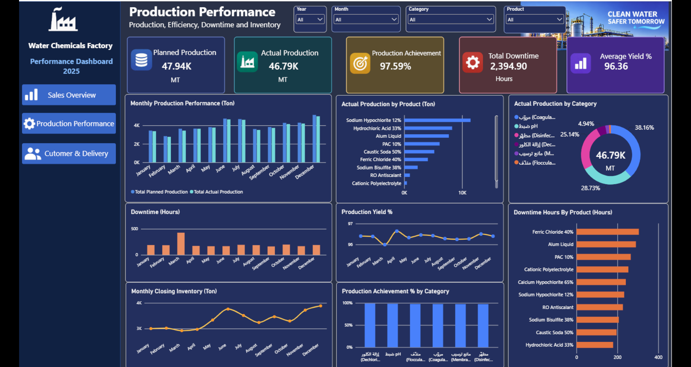
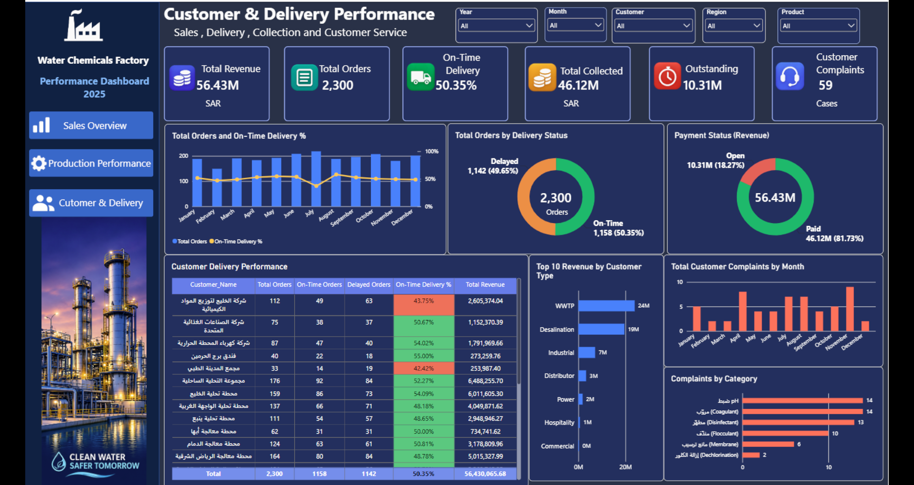

Project Overview
This three-page Power BI project analyzes the operational and commercial performance of a water chemicals factory using a training dataset. It combines sales, production, inventory, delivery, collections, and customer service indicators to support data-driven decision-making.
Key Performance Indicators
01 | Sales Overview
Revenue and profitability analysis by month, product, product category, customer, and region.

02 | Production Performance
Planned versus actual production, production achievement, downtime, yield, inventory, and product-level performance.

03 | Customer & Delivery Performance
Order fulfillment, on-time delivery, customer complaints, payment collections, outstanding revenue, and customer performance.

Tools & Techniques
Project Note
This dashboard was developed for portfolio demonstration and analytical training. The dataset is illustrative and does not represent actual company financial results.